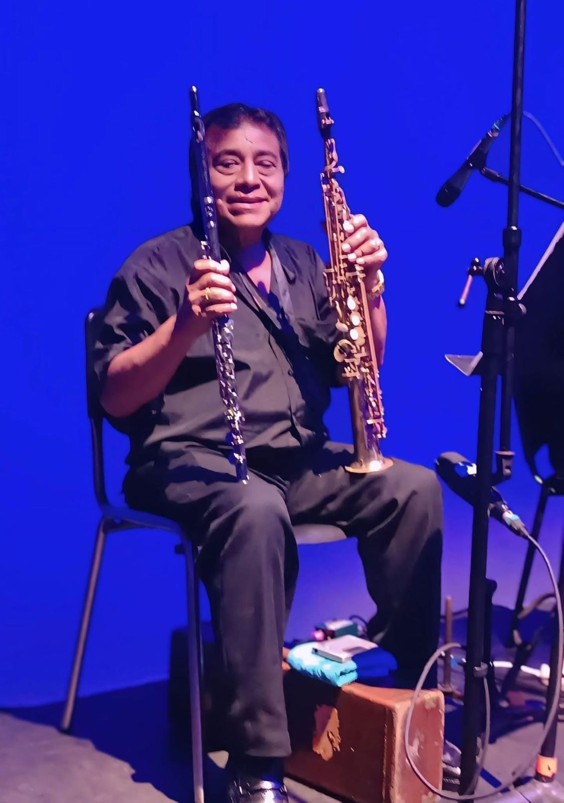
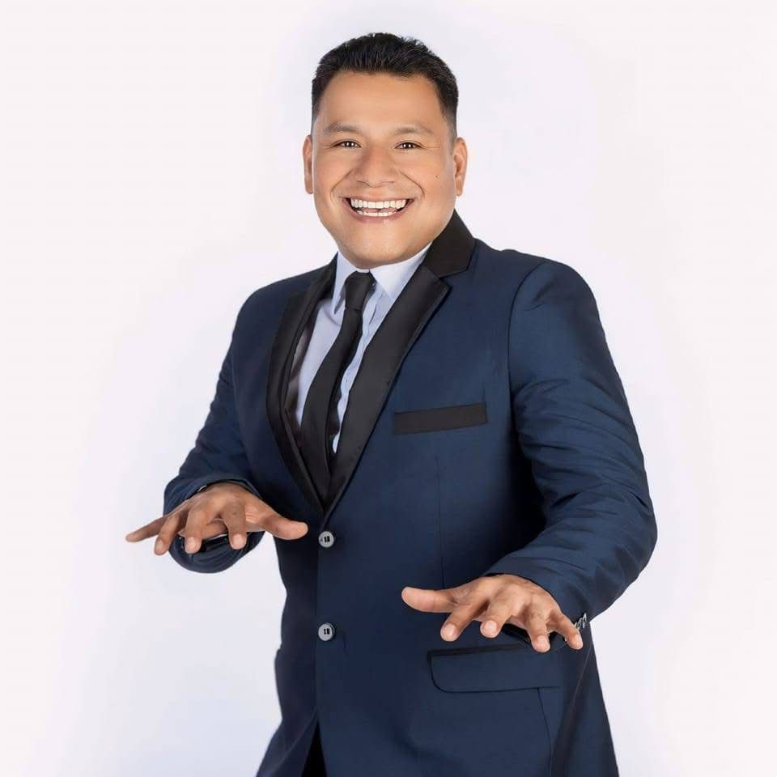
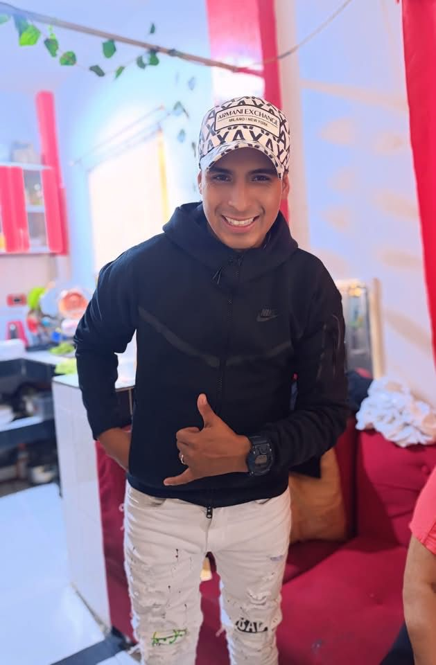
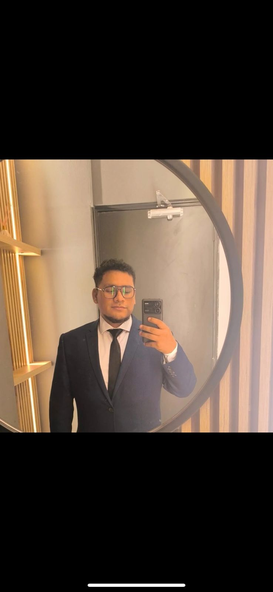

Conoce a la familia que da vida a la banda
Una familia unida por la música, la tradición y la pasión por el escenario.
Cada integrante aporta su talento, personalidad y energía para dar vida a una propuesta musical única y familiar.
Integrantes principales
Una familia unida por la música, donde cada integrante aporta talento, experiencia y una conexión especial con el público en cada presentación.
Andrés Yataco
Director musical y fundador
Andrés Yataco es el corazón del proyecto y quien guía la identidad artística de la banda. Su experiencia, trayectoria y pasión por la música han permitido construir una propuesta familiar sólida, cercana y llena de energía para todo tipo de eventos.
Como director musical, se encarga de mantener la esencia del grupo, coordinar cada presentación y transmitir al público la alegría y el sentimiento que caracterizan a la agrupación.

Carlos Yataco
Piano y sonido
Carlos Yataco aporta musicalidad, técnica y versatilidad a cada presentación. Su trabajo en el piano complementa la armonía de la banda, enriqueciendo cada tema con un acompañamiento elegante y dinámico.
Además, se encarga del sonido, cuidando que cada detalle técnico permita ofrecer una experiencia musical clara, equilibrada y profesional para el público. Hijo de Andrés Yataco, representa la continuidad del legado familiar sobre el escenario.

Andrés Yataco
Voz
Andrés Yataco destaca por su carisma, presencia escénica y conexión con el público. Su interpretación transmite energía, cercanía y emoción en cada presentación, aportando frescura al repertorio de la banda.
Como hijo de Andrés Yataco, forma parte de la nueva generación que continúa fortaleciendo el proyecto familiar, llevando la música y la tradición a nuevos escenarios.

Carlos Andrés Yataco
Voz
Carlos Andrés Yataco aporta juventud, entusiasmo y una voz que suma identidad al estilo de la agrupación. Su participación en escena refuerza el espíritu familiar de la banda y conecta con públicos de distintas generaciones.
Hijo de Carlos Yataco, representa la nueva etapa de esta historia musical, manteniendo viva la tradición familiar y proyectándola con energía, talento y pasión por el canto.

¿Quieres tener a la banda en tu evento?
Cuéntanos la fecha, lugar y tipo de celebración, y coordinamos todos los detalles.